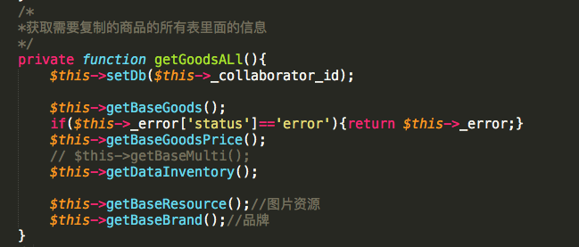

编写可读代码的艺术
一、表面层次的改进
1. 把信息装到名字里
（1）选择专业的词
清晰和精确比装可爱好。
| 单词 | 更多选择 |
|---|---|
| Get | Fetch, Download |
| Stop | Kill, Pause |
| Send | Deliver, Dispatch, Announce, Distribute, Route |
| Find | Search, Extract, Locate, Recover |
| Start | Launch, Create, Begin, Open |
| Make | Create, SetUp, Build, Generate, Compose, Add, New |
（2）避免使用像tmp和retval这样泛泛的名字
retval这个名字没有包含很多信息，用一个描述该变量的值的名字来代替它。
tmp这个名字只应用于短期存在且临时性为其主要存在因素的变量。
如果你要使用像tmp、it或者retval这样空泛的名字，那么你要有个好的理由。
我们的返回值经常有 $result, $data这样的值
（3）用具体的名字代替抽象的名字
在给变量、函数或者其他元素命名时，要把它描述得更具体而不是更抽象。
（4）为名字附带更多信息
如果你的变量是一个度量的话（如时间长度或者字节数），那么最好把名字带上它的单位。
| 函数参数 | 带单位的参数 |
|---|---|
| Start(int delay) | delay -> delay_secs |
| CreateCache(int size) | size -> size_mb |
| ThrottleDownload(float limit) | limit -> max_kbps |
| Rotate(float angle) | angle -> degrees_cw |
在对于这个变量存在危险或者意外的任何时候你也该采用它。
| 情形 | 变量名 | 更好的名字 |
|---|---|---|
| 一个“纯文本”格式的密码，需要加密后才能进一步使用 | password | plaintext_password |
| 一条用户提供的注释，需要转义之后才能用于显示 | comment | unescaped_comment |
| 已转化为UTF-8格式的html字节 | html | html_utf8 |
| 以“url方式编码”的输入数据 | data | data_urlenc |
（5）名字应该有多长
在小的作用域里可以使用短的名字，如果一个标识符有较大的作用域，那么它的名字就要包含足够的信息以便含义更清楚。对于首字母缩略词和缩写，使用项目所特有的缩写词非常糟糕。
经验原则是：团队的新成员是否能理解这个名字的含义。
丢掉没用的词：有时名字中的某些单词可以拿掉而不会损失任何信息。
我们的变量命名最典型的是 _ __ ,硬盘没有那么值钱，所以把变量名写全。
（6）利用名字的格式来传递含义
项目中使用一致的命名规范，使得对于下划线、连字符和大小写的使用方式也可以把更多的信息装到名字中。
2. 不会误解的名字
要多问自己几遍：“这个名字会被别人解读成其他的意义吗？”
与使用者的期望相匹配
用min和max来表示（包含）极限
用first和last来表示包含的范围
用begin和end来表示包含/排除范围
使用is和has这样的词来明确表示它是布尔值，避免使用反义的词
我们的变量名：$booRollback; 根据这个值，不能清楚判断是否需要回滚
我们的方法名：hide_menu_show() 又是hide,又是show, 完全不知道啥意思； getGoodsALl()以为这个方法是获取商品信息，拿到返回值，结果这是一个set

3. 审美
（1）三条原则
- 使用一致的布局，让读者很快就习惯这种风格
- 让相似的代码看上去相似
- 把相关的代码行分组，形成代码块
（2）方法
- 在需要时使用列对齐
- 把代码分成“段落”
- 一致的风格比“正确”的风格更重要
二、简化循环和逻辑
(1). 把控制流变得易读
- 默认情况下都用if/else，三目运算符?:只有在最简单的情况下使用。
- 从函数中提前返回
- 最小化嵌套
if($foo == 1){
xxxx
xxxx
xxxx
xxxx
}else{
return 1;
}
yyyyyyy
yyyyyyy
if($foo != 1){
return 1;
}
xxxx
xxxx
xxxx
yyyyyyy
yyyyyyy
2. 拆分超长的表达式
（1）用作解释的变量
拆分表达式最简单的方法就是引入一个额外的变量，让它来表示一个小一点的子表达式：
3. 变量与可读性
（1）缩小变量的作用域
让你的代码对尽量少的代码行可见
- 把大的类拆分成小一些的类，并且这些类之间相互独立
- 大文件拆分成小文件，大函数拆分成小函数
- “尽量使方法变成静态的”，静态方法是让读者知道“这几行代码与那些变量无关”的好办法
- 把定义向下移，把每个定义移到它的使用之前
我们的方法2K多行，一个变量可能是在最开始申明的
（2）只写一次的变量更好
操作一个变量的地方越多，越难确定它的当前值
2K多行的方法，我们的$arrMap变量还从头用到尾,不断赋值，不断unset
三、重新组织代码
- 抽取不相关的子问题
- 一次只做一件事
- 把想法变成代码